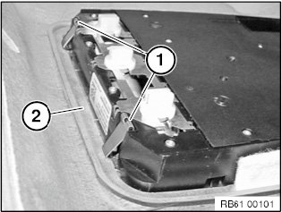
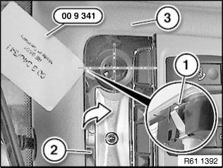
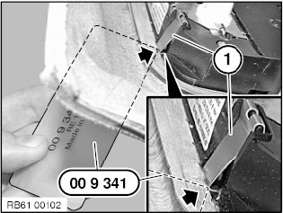
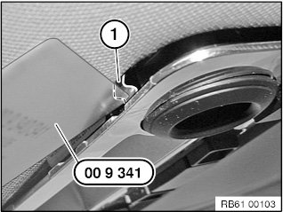
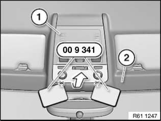

61 31 043 Removing and Installing or Replacing Roof Switch Cluster
61 31 043 Removing And Installing Or Replacing Roof Switch Cluster
Special tools required:

IMPORTANT: Follow instructions for handling light bulbs (interior lights).

IMPORTANT: Read and comply with notes on protection against electrostatic damage (ESD protection).

IMPORTANT: Reflector on interior roof light must not be damaged.
Carefully unclip trim of interior roof light (1) from interior roof light with special tool 00 9 341 in direction of arrow and remove.

NOTE: Roof switch cluster is secured to frame of headliner (2) with two retaining clips (1).

IMPORTANT: Reflector (2) and headliner (3) must not be damaged.
Retaining clips (1) are located on centreline of both reading lights.
Position special tool 00 9 341 as illustrated.

NOTE: Shown from above on a model for clearer illustration.
IMPORTANT:
Risk of damage.
Retaining clips (1) must not be damaged.
Position special tool 00 9 341 as illustrated.

Position special tool 00 9 341 as illustrated and release retaining clips (1).
NOTE: Only then can the roof switch cluster be removed without causing damage.

Lever roof switch cluster (1) out of headliner (2) with special tool 00 9 341 in direction of arrow.
Disconnect plug connections underneath and remove roof switch cluster (1).
NOTE:
Disconnecting the plug connection for the hands-free microphone or emergency call button results in fault memory entries in the telephone control unit (limitation in the emergency call system).
After fitting, read out fault memory and if necessary delete entries.

Installation note:
Immediately after removal, fit interior roof light cover (1) to roof switch cluster (3):
1. Feed in interior roof light cover (1) at line (2)
2. Press interior roof light cover (1) onto interior roof light in direction of arrow
Make sure interior roof light cover (1) is correctly engaged on interior roof light.
Installation note:
If necessary, initialize slide/tilt sunroof

Replacement:
- Carry out vehicle programming/encoding
- Initialize slide/tilt sunroof.
- If necessary, remove bulbs.